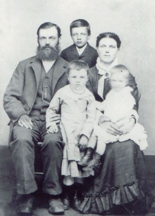

|
Amund Simonson was born in Norway 3 September 1852. Following Norwegian custom, he took his surname from his father's name, Simon. He married Helene (Hanson?, Budsberg?) and they had two children together in Norway. In 1881 the family of four emigrated from Norway to America. To follow the American custom of uniform surnames in a family, they changed Anne's surname to Amundson. However, Amund and Helene kept the surname Simonson. Amund and his wife both died in 1929.
|

Amund, Simon, Helene, Anne, and Hannah.
|